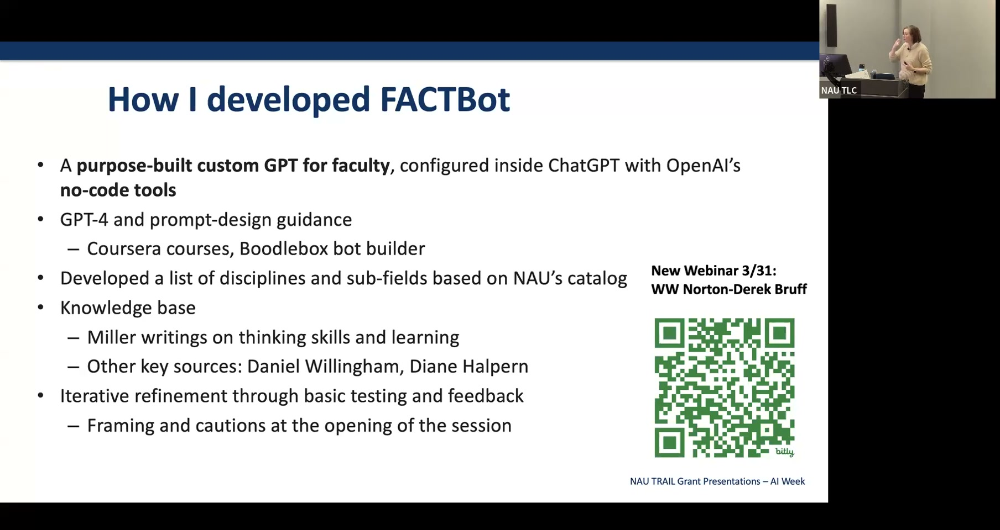

FACTBot: A Custom AI Assistant for Discipline-Specific Critical Thinking
A no-code faculty-facing GPT that helps instructors integrate discipline-specific critical thinking frameworks into their courses.
Presented by Michelle Miller, Professor of Psychological Sciences and Co-Executive Director, NAU Institute for Advancing Applications of Artificial Intelligence (Triple AI)
About This Project
Critical thinking is universally valued across disciplines, notoriously difficult to define consistently, and harder still to teach and assess. When a widely covered 2025 study claimed that AI tools were eroding students' critical thinking skills, faculty across higher education took notice — but closer examination revealed significant methodological problems with that research, including use of self-rated measures rather than direct assessment, a general-population sample rather than university students, and subsequent findings of hallucinated citations and statistical irregularities. This project started from that evidence gap and asked instead how AI might be designed to actively support critical thinking rather than undermine it.
Miller built FACTBot (Faculty Assistant for Critical Thinking) — a custom GPT developed using ChatGPT's no-code builder — as a faculty-facing resource loaded with discipline-specific critical thinking frameworks, Miller's own published research on learning and thinking skills, and guidance from leading cognitive scientists including Daniel Willingham and Diane Halpern. Faculty can use FACTBot to get tailored suggestions for integrating critical thinking into their specific disciplinary context. FACTBot has since been demonstrated at keynote and workshop presentations reaching approximately 1,200 attendees, shared through a faculty development newsletter with around 1,000 subscribers, and is continuing to be refined based on faculty feedback and emerging evidence on how structured AI interactions can enhance rather than replace higher-order thinking.
Project Highlights

